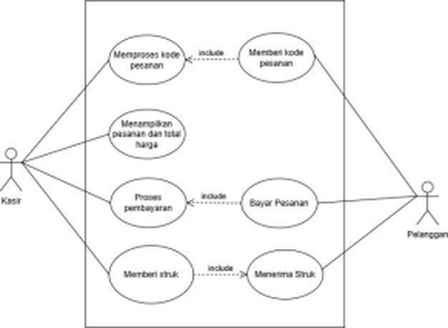
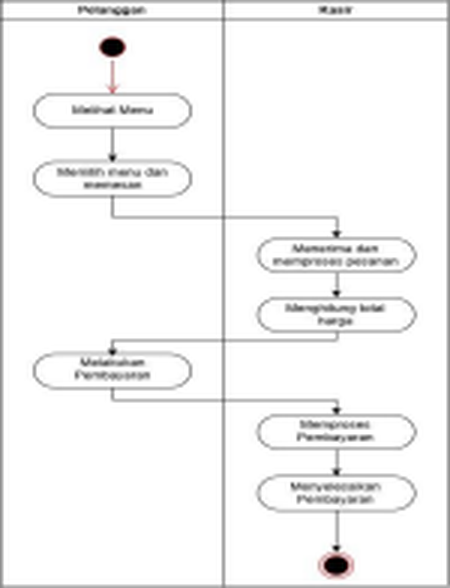
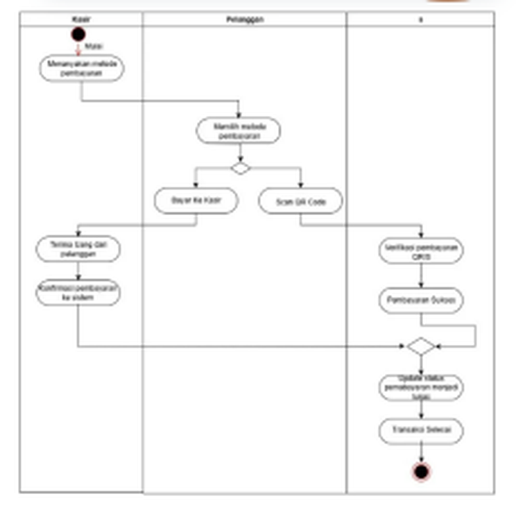
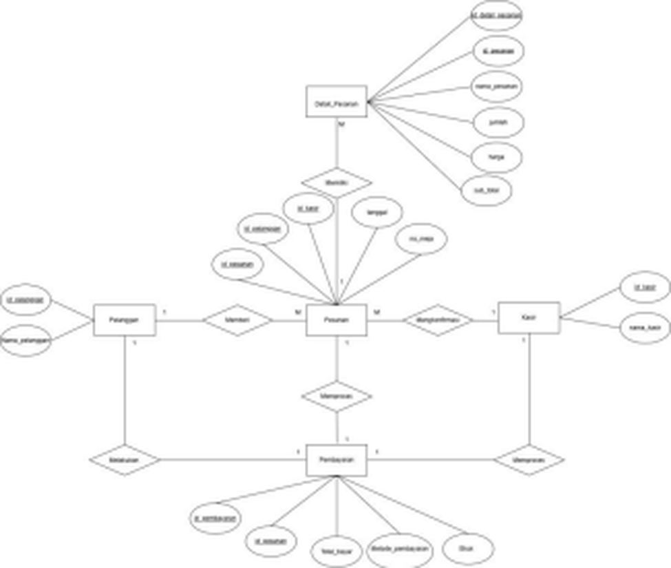
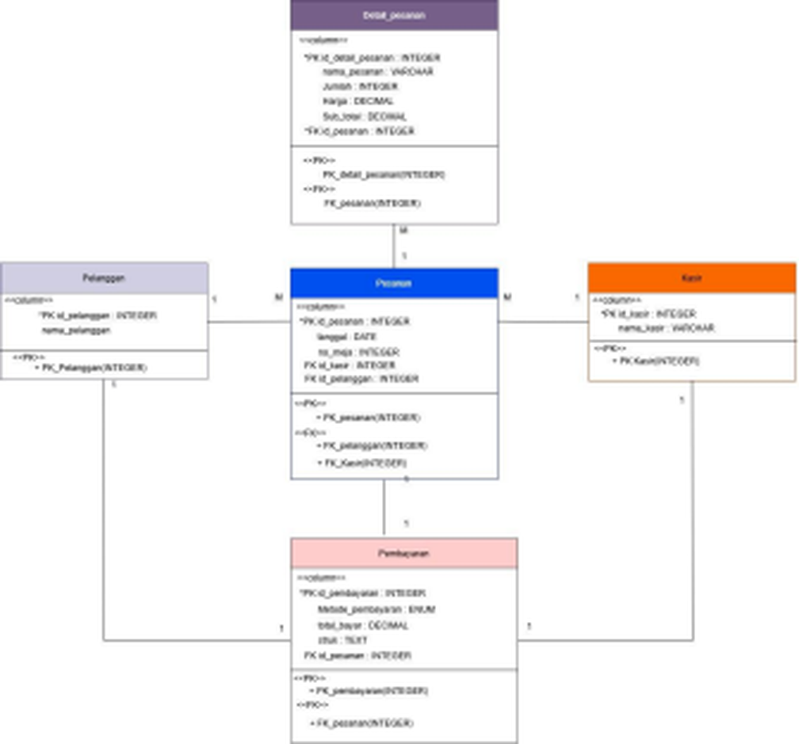
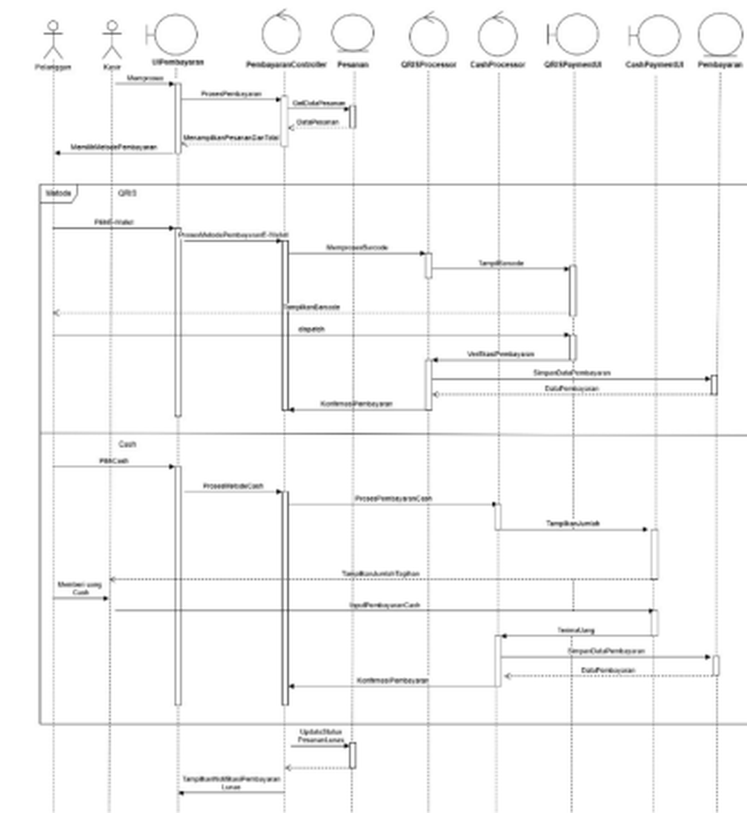
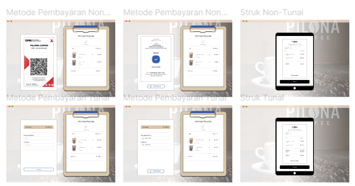

Academic Project · System Analyst & Designer · Tim 3 orang
Rancangan sistem pembayaran dan kasir berbasis QR Code, dari analisis sampai prototipe.
Visual preview
Prototipe Figma: input kode pesanan, detail pesanan, dan pemilihan metode pembayaran.

Kebutuhan fungsional
- Memproses kode pesananMenerima kode unik atau barcode dari pelanggan, memvalidasinya, lalu menghubungkannya dengan data pesanan di database.
- Menampilkan pesanan dan total hargaDaftar item dan total harga dihitung otomatis, dengan layar konfirmasi rincian pesanan untuk kasir.
- Proses pembayaranMetode tunai dan QRIS, penerimaan nominal bayar, dan perhitungan kembalian.
- Memberi strukMencetak struk transaksi dan menyimpannya di database untuk laporan dan rekap.
- Memberi kode pesananPelanggan memperoleh kode pesanan lewat aplikasi pemesanan atau sistem antrian yang terhubung dengan meja.
- Bayar pesananPelanggan melihat total tagihan, metode pembayaran, dan konfirmasi bahwa transaksi berhasil.
- Menerima strukStruk dapat diterima dalam bentuk fisik maupun digital.
- Laporan penjualanRekap penjualan harian, mingguan, dan bulanan untuk manajemen.
Perancangan sistem






Prototipe antarmuka

Overview
Kasir kafe yang masih manual membuat antrian panjang saat jam sibuk, rawan salah input dan salah hitung, serta menyulitkan pembuatan laporan penjualan. Proyek ini merancang sistem kasir dengan pemesanan lewat barcode di meja: pelanggan memberikan kode pesanan, sistem menampilkan rincian dan total otomatis, lalu pembayaran tunai atau QRIS diproses sampai struk tercetak.
Project kelompok tiga orang untuk mata kuliah Analisis dan Desain Perangkat Lunak, dengan studi kasus kedai kopi lokal di Tangerang. Data dikumpulkan lewat observasi, wawancara, dan studi pustaka. Peran saya System Analyst dan Designer: analisis kebutuhan, Use Case, Activity Diagram, ERD, struktur data, dan prototipe Figma. Proyek ini belum memasuki implementasi kode.
Permasalahan dan solusi
- Kesalahan input kode pesananValidasi otomatis: sistem memberi notifikasi jika kode tidak valid atau tidak ditemukan.
- Proses input memakan waktuAutocomplete atau dropdown untuk mencari berdasarkan kode atau nama produk.
- Keterbatasan perangkatSistem dioptimalkan agar tetap responsif walaupun tanpa scanner barcode.
- Kasir belum terbiasa dengan kode produkPelatihan kasir agar bisa menginput dengan cepat dan benar.
- Gangguan perangkat kerasMenyediakan perangkat input cadangan.
Kesimpulan dan saran
Sistem yang dirancang mempercepat input pesanan, meminimalkan kesalahan input manual, dan mencatat seluruh transaksi dari pemesanan, pembayaran, sampai struk secara otomatis. Integrasi QRIS memudahkan pembayaran non-tunai.
Saran pengembangan: manajemen stok yang terintegrasi dengan transaksi, sistem berbasis cloud agar data bisa diakses kapan saja, laporan keuangan yang lebih detail (laba rugi, pengeluaran, pembelian bahan baku), dan pelatihan kasir secara berkala.
Aktor
- PelangganMemberi kode pesanan, membayar, dan menerima struk.
- KasirMemproses kode, mengonfirmasi pesanan dan pembayaran, serta mencetak struk.
Stack
Basis data (5 tabel)
Rancangan input
Rancangan output
Kebutuhan hardware dan software
- HardwarePOS Intel Core i3, RAM 4 GB, SSD 128 GB; thermal printer 58/80 mm; cash drawer; router minimal 100 Mbps.
- SoftwareWindows 10/11, MySQL atau MariaDB, Laravel atau PHP, Apache, Google Chrome, dan QRIS API.